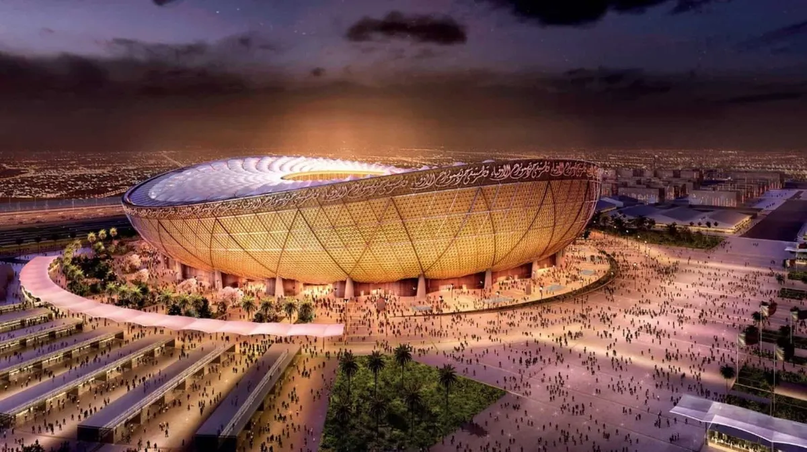
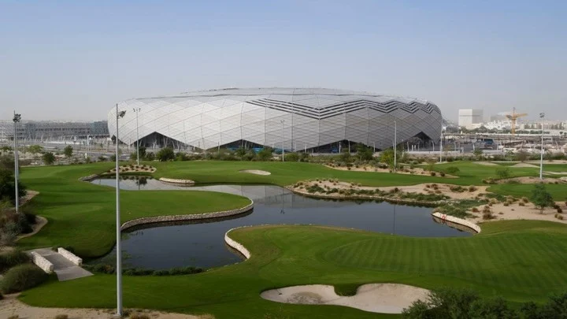
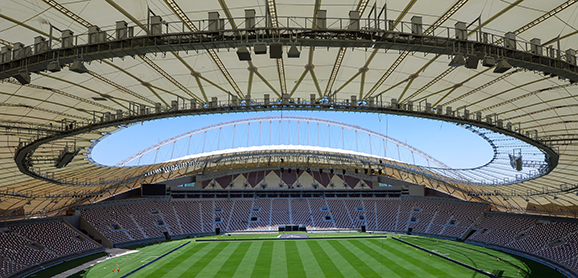
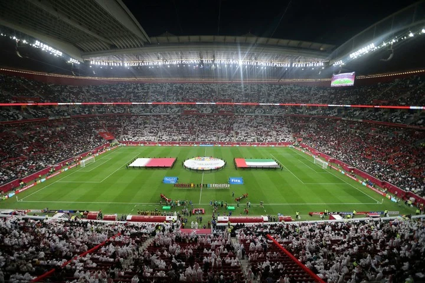
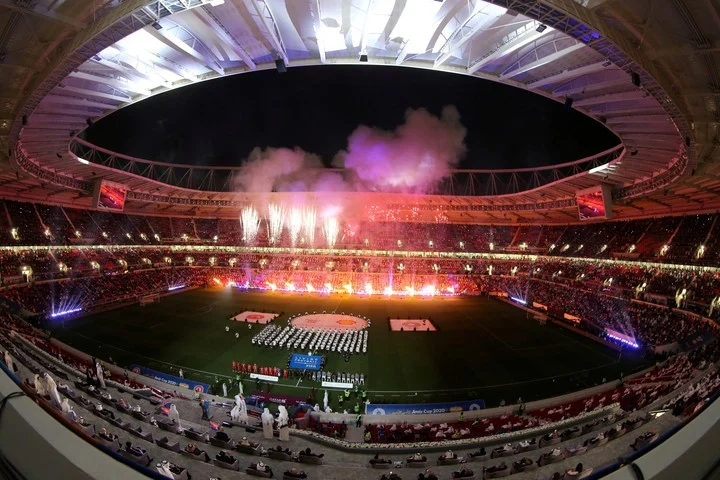
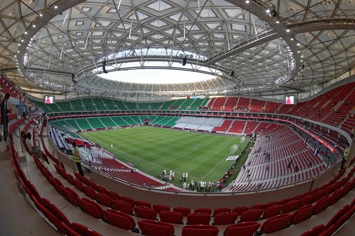
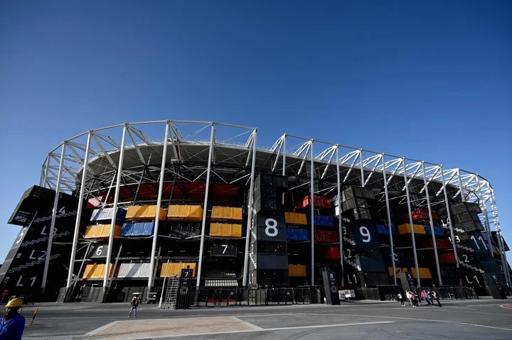
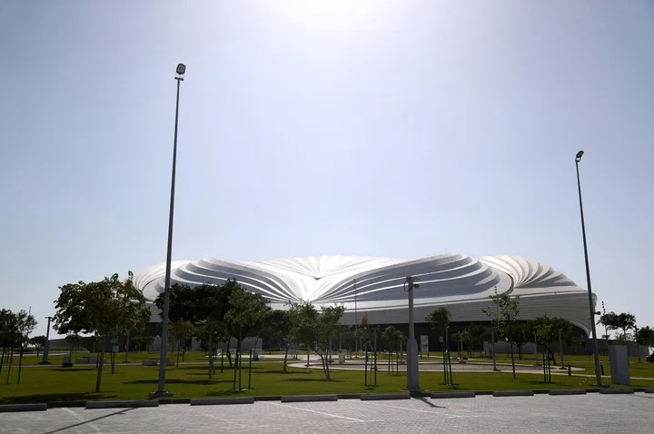

Estadios
Los partidos del próximo Mundial tendrán lugar en ocho estadios ubicados en cinco ciudades: Doha, Lusail, Rayyan, Al Khor y Al Wakrah. Las últimas cuatro se encuentran muy cercanas a la capital, en un radio máximo de 50 kilómetros.
- 
Estadio Lusail (80.000 espectadores): Ubicada en la ciudad de Lusail,esta maravilla arquitectónica llevará el título del estadio más grande de la competición y la sede del partido final de Qatar 2022. Cuenta con una sala VIP y un sector denominado super VIP.
- 
Estadio ciudad de la Educación (45.000 espectadores): Se llama ciudad de la educacion por encontrarse en las proximidades del polo educativo, que nuclea escuelas y universidades en Al Rayyan, al oeste de Doha.
- 
Estadio internacional Khalifa (40.000 espectadores): El Khalifa Internacional, ubicado en Doha, Fue el primer estadio del mundo en ser construido con una innovadora tecnología de enfriamiento que emplea hasta un 40% menos de energía que cualquier sistema convencional y, lo más importante, es el primer estadio refrigerado al aire libre.
- 
Estadio Al Bayt (60.000 espectadores): Este fue el elegido por los organizadores para albergar el partido inaugural de Qatar 2022. Posee un llamativo diseño que se asemeja a una carpa árabe. En las inmediaciones del estadio se encuentran parques atractivos con lagunas y un amplio estacionamiento, que cuenta con espacio para más de 6.000 autos.
- 
Estadio Al Rayyan (40.000 espectadores): construido en el lugar del antiguo Estadio Ahmed Bin Ali e inspirado en las dunas de arena de Qatar. Está previsto que solo reciba partidos hasta los cuartos de final. El recinto será el nuevo estadio de Al-Rayyan Club, uno de los clubes más populares en Qatar.
- 
Estadio Al Thumama (40.000 espectadores): Otro de los que también tendrá partidos únicamente hasta los cuartos de final. Cuenta con un imponente diseño que representa la gahfiya, una toca tradicional tejida usada por los hombres en todo el mundo árabe. El novedoso sistema de refrigeración del estadio asegurará que la temperatura esté siempre en 18 grados.
- 
Estadio 974 Ras Abu Aboud (40.000 espectadores): Al igual que todas las canchas para el Mundial, también tendrá su sistema de refrigeración para paliar las altas temperaturas. Se utilizará hasta cuartos. Fue hecho con contenedores para transportes, asientos removibles y otros "bloques de construcción" modulares.
- 
Estadio Al Janoub (40.000 espectadores): Está inspirado en las velas de los barcos tradicionales y tiene como objetivo destacar las industrias locales. Tuvo un costo de 575 millones de dólares y se necesitaron 10 millones de horas de trabajo para levantarlo desde cero. Posee un sistema de refrigeración debajo de los asientos que les permitirá a los espectadores disfrutar los partidos con 24 grados, aunque la temperatura externa sea de 36 o 40.